不再做减法：同样的骨架，加上质感。
R28、R30、R31 连续三轮 65 分，最近一次评分在数据看板，没有批注。R30 收结构、R31 减线和修对比度，分数都没动：读得清楚已经做到，差的是「像一个成熟产品」的那一层。R32 不改骨架（一个对象一块面、扁平按钮、线少、AA 对比、鸢尾 #6246EA、Geist 数字、不用衬线和 Google CDN），只补五处质感。
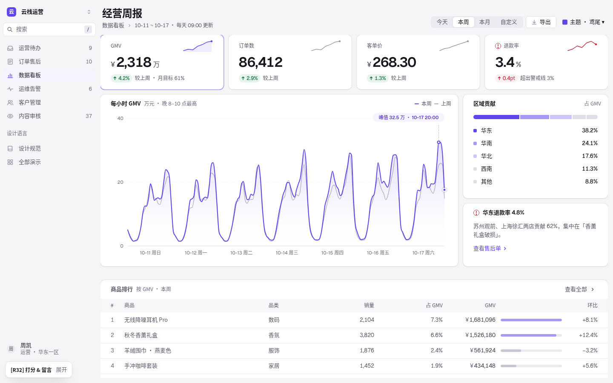
诊断：为什么停在 65
把 R28 / R30 / R31 的数据看板和 Linear、Stripe、Vercel、Attio、Raycast、Notion、Arc、Mercury、Ramp 的整页截图并排看（截图只在本地研究，不发布；下面三张是本项目自己的渲染）：
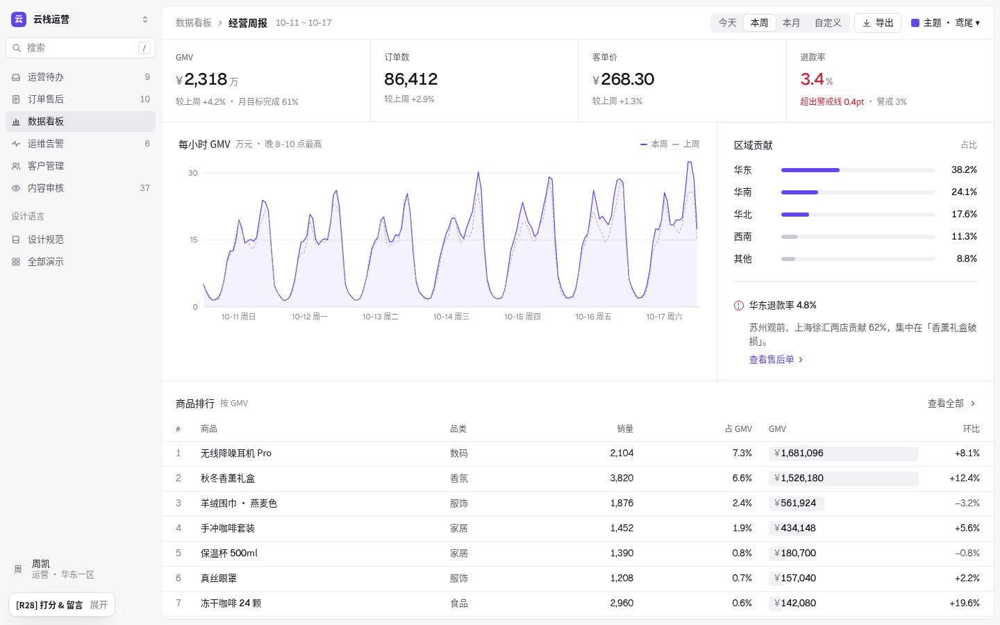

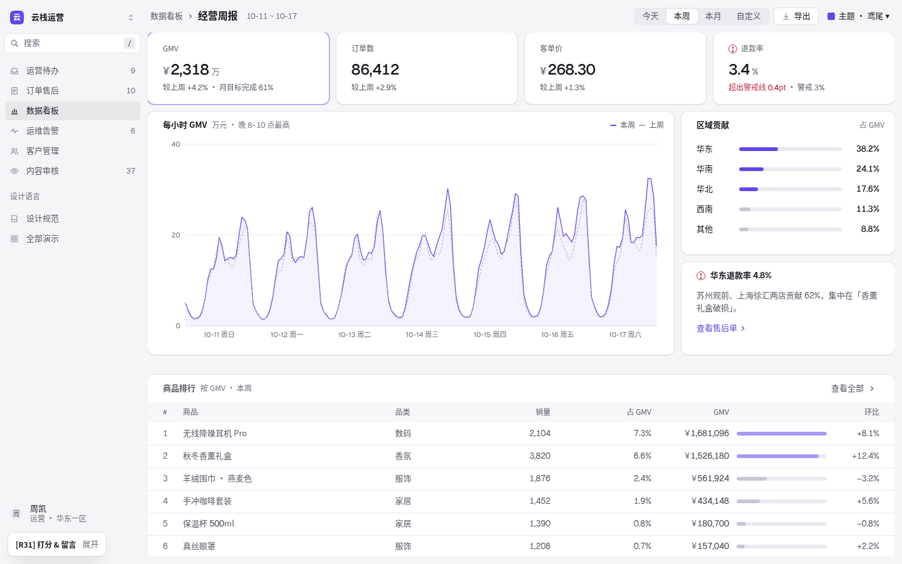
三轮的差别都在「去掉什么」：卡片、线、低对比的灰。三张图的共同点没变过：标题是一行 16px 面包屑；最大的数字 24px / 500；折线 1.25px、实线网格、虚线对比线；当前页导航只是一层灰；悬停提示是一个黑色小块、只有一个数。参考产品的共同点正好相反：页面有一个明确的标题（Mercury 账户页的标题约为正文 1.8 倍，余额约 2.2 倍、分位缩小）；关键数字是页面上最大的东西；图表有读数（Linear Insights 的单个大数、Vercel 观测的端点和阈值）；主色只在几处出现，但每处都确定。
差距表：9 项里选 5 项
| 维度 | R28–R31 的状态 | 参考里的做法 | R32 |
|---|---|---|---|
| 页头与构图 | 16px 面包屑当标题，页面没有「封面」 | Mercury / Notion / Attio：24–28px 标题 + 一句副行；记录页头像和名称在最上面 | Q1 改 |
| 关键数字的字号节奏 | 24 / 500，单位和数字差不多重；涨跌混在灰字里 | Stripe / Mercury / Ramp：数字明显大于其它文字，分位和货币缩小；涨跌是彩色小标签 | Q2 改 |
| 看板图表的打磨 | 细折线锯齿、实线网格、单值黑提示、区域是 5 根一样的灰条 | Linear Insights / Vercel 观测：平滑线、点状网格、端点、峰值、多值提示卡 | Q3 改 |
| 强调色与图标 | 主色只剩按钮和折线；当前页导航灰底黑图标；导航 14px 图标偏小 | Linear / Raycast：当前位置用主色；图标统一粗细 | Q4 改 |
| 交互微细节与动效 | 按下无反馈；焦点是贴边描边；切换指标整图淡入；行操作常驻 | Linear / Arc：按下回弹、清晰焦点环、数据变化时线条重画 | Q5 改 |
| 密度平衡 | R30 已调过：订单首屏 17 行、面内 24、区块 32 | — | 保持（页头变高后仍守住 17 行） |
| 内容真实度 | 门店、单号、金额、理由都是可信的业务数据 | — | 保持 |
| 空状态 | R31 已补齐（图标 + 一句话 + 一个操作） | — | 保持 |
| 悬停 / 焦点 | 行悬停已有 | — | 并入 Q5 |
R31 → R32 量化（1440×900 首屏，脚本 tools/m32_test.js、lines / audit）
| 页面 | 贯穿线条 | 页面标题 | 最大关键数字 | 灰字对比不合格（7 主题） |
|---|---|---|---|---|
| 运营待办 | 17 → 17 | 16 → 24px | — → 28 | 0 → 0 |
| 订单售后 | 42 → 42 | 16 → 24px | 20 → 24 | 0 → 0 |
| 数据看板 | 11 → 9 | 16 → 24px | 24 → 32 | 0 → 0 |
| 运维告警 | 20 → 20 | 16 → 24px | 24 → 32 | 0 → 0 |
| 客户管理 | 12 → 12 | 16 → 24px | 13 → 24 | 0 → 0 |
| 内容审核 | 20 → 20 | 16 → 24px | — → — | 0 → 0 |
页头从 52px 高到 82px；为此把页头上下边距收到 16 / 12、紧凑指标格行高收到 28，订单首屏仍是 17 行。线条没有增加（看板 11 → 9：区域贡献的 5 根轨道换成 1 条堆叠条）。
并排对照（本项目自己的渲染，左 R31 · 右 R32）
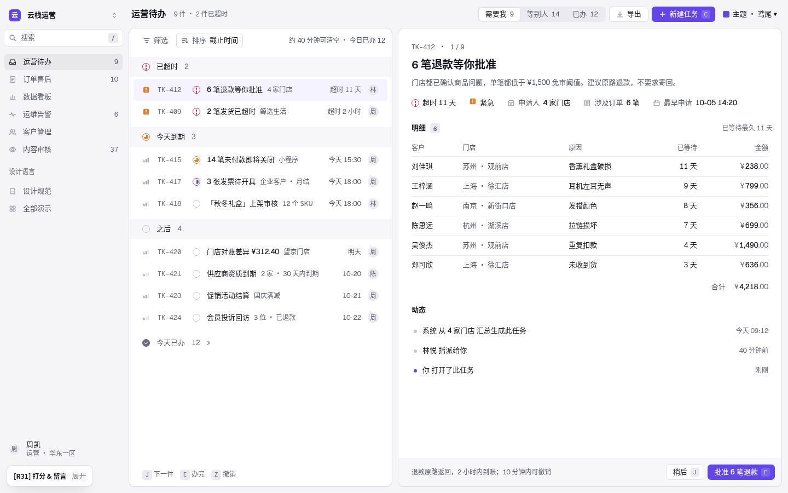
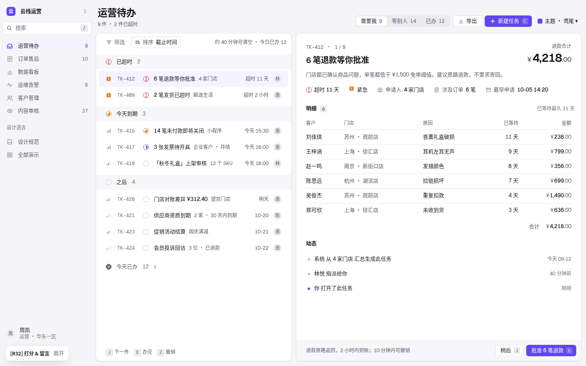

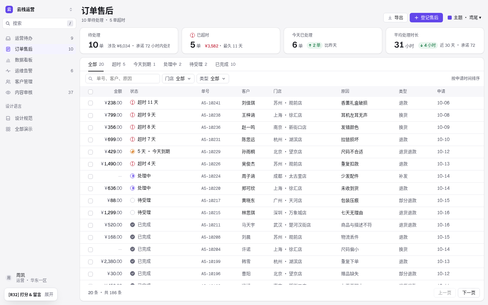

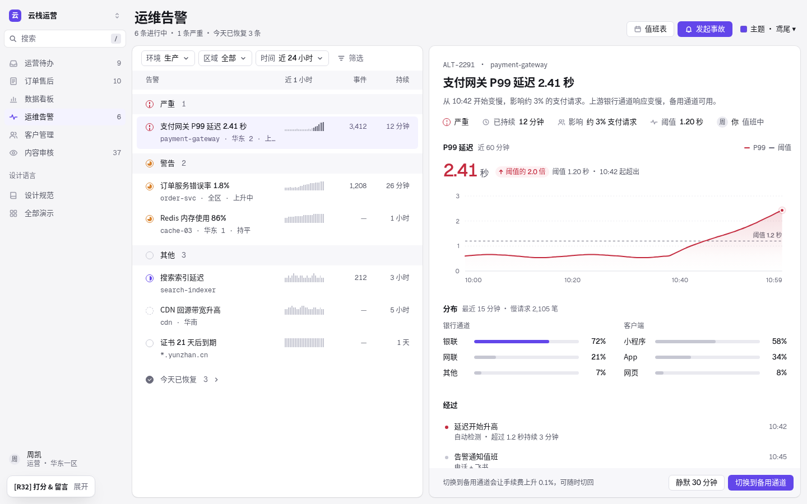
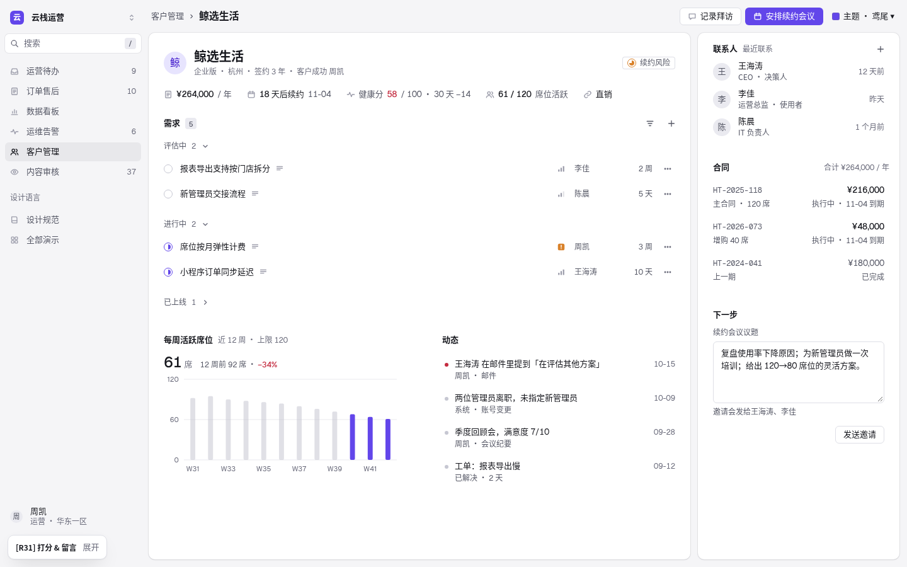
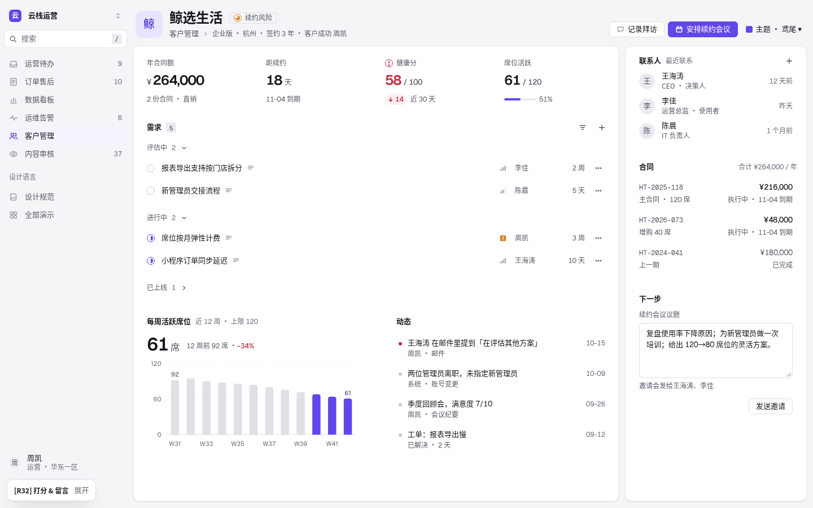

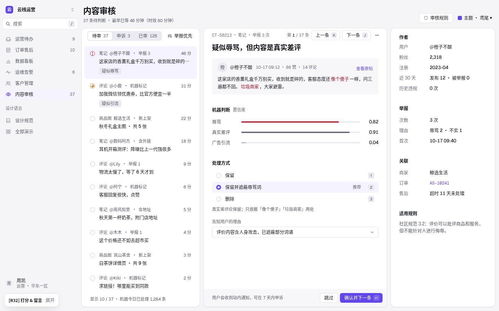
2 倍局部
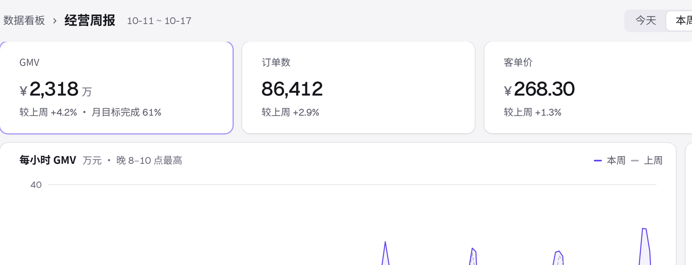
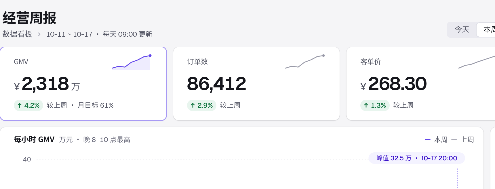
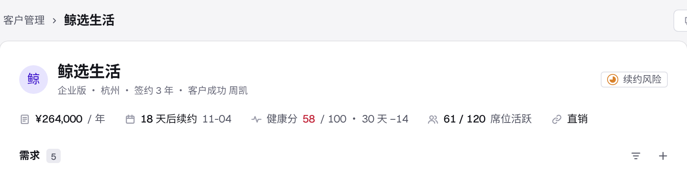
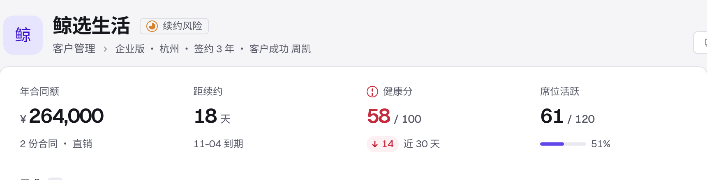
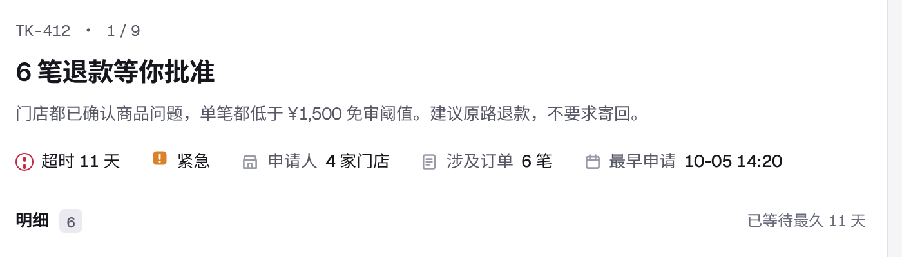
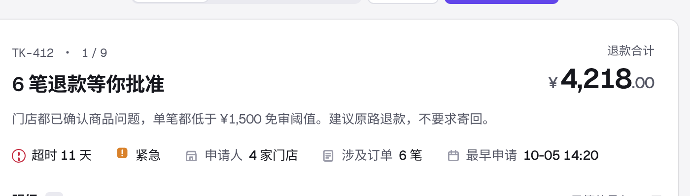
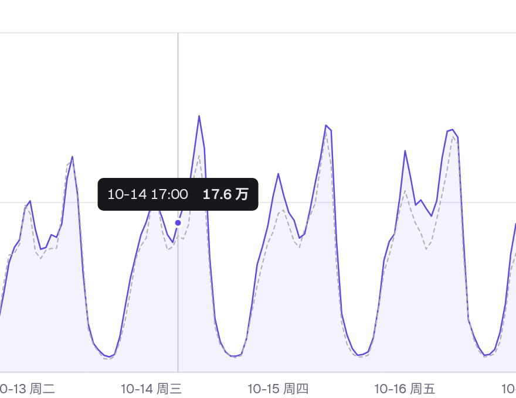
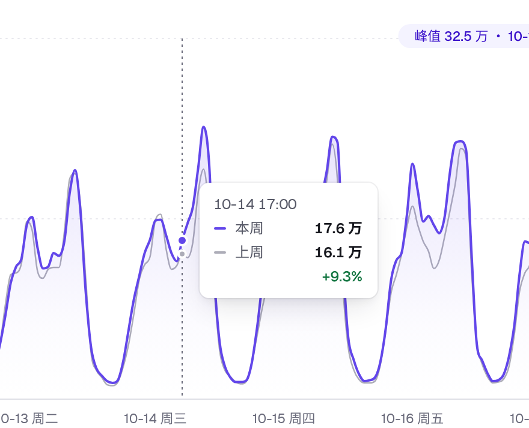
规则 Q1–Q5
左边按 R32 渲染（活的，可以按、可以 Tab），右边是 R31 的写法。全部由本页 HTML 画出；Q3 两张是本项目演示的截图。
Q1 · 页头：标题 24px + 副行
经营周报
Q2 · 关键数字用显示级字号
Q3 · 图表要有「读数」
Q4 · 主色只出现在四个地方
Q5 · 操作有手感，但不表演
新增令牌
| 令牌 | 值 | 用在 |
|---|---|---|
| --fs-h1 | 24px / 32，600，-0.022em | 页头标题 |
| --fs-display | 32px / 40，600，-0.03em | 看板指标、结论数字（P99）、抽屉金额 |
| --fs-fig | 28px / 36 | 详情关键数字 |
| --fs-fig-m | 24px / 32 | 紧凑指标格、记录概况 |
| --up / --up-bg | #11743F / #E8F5EE（星蓝 #5CCB8F / 12%） | 涨跌标签、提示里的差值 |
| --focus-ring | 0 0 0 2px surface, 0 0 0 4px p-300 | 键盘焦点 |
| --ease-spring | cubic-bezier(.2,.8,.2,1) | 指标格抬起 |
字号刻度从 11 / 12 / 13 / 16 / 20 / 24 扩为加上显示级 28 / 32，只给数字用；货币、小数、单位固定 16px（24 档旁 13px），不用 em 产生零碎字号。
保留的规则
- R30 结构：一个对象 = 一块面；同类并列才用卡；操作条贴底；组头贯穿色带；首屏不表演。
- R31 十条：面靠环 + 投影；间距尺 4–48；灰字 ≥ 4.5、三级灰只给时间 / 编号 / 计数；属性并进值；预定义色阶；五级投影；空状态 = 图标 + 一句话 + 一个操作。
- 鸢尾 #6246EA、Geist 数字字体、扁平按钮、不用衬线、不用 Google CDN（字体本地 woff2）。
动效
M1–M7 不变。R32 新增 M8 按下回弹（80ms）、M9 切换指标时主线重画（420ms，峰值与端点 300ms 后淡入）、M10 指标格悬停抬起 1px（240ms，--ease-spring）。三者在「减少动态效果」下关闭。
M1 · 页签 / 分段：160ms 滑动
M2 · 悬停只改底色
M3 · 展开收起：240ms 高度过渡
M4 · 抽屉：从右侧滑入，退出更快
M5 · 骨架屏形状和内容一致，只在真等待时
GMV
GMV
M6 · 数字只在变化时动一次
M7 · 首屏不表演
主题
7 套主题 × 6 页灰字对比全部 ≥ 4.5。星蓝下当前页导航用 p-100 底 + p-300 图标，峰值标签文字用正文色。
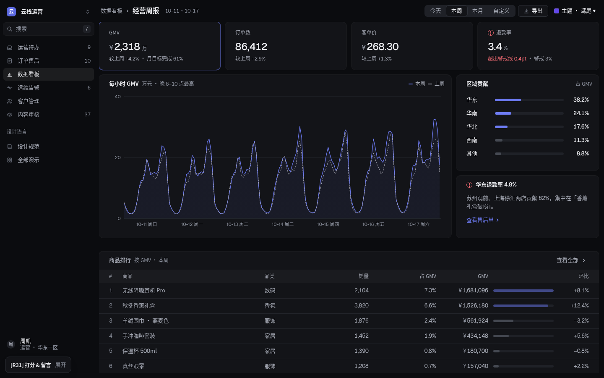
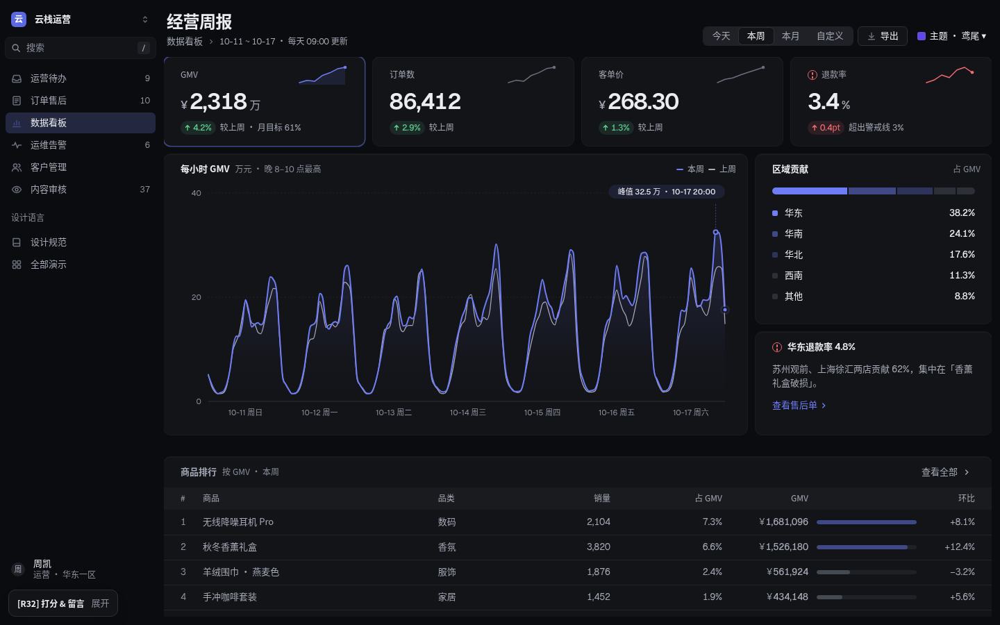
复核记录
| 轮次 | 发现 | 处理 |
|---|---|---|
| 1 · 全图 | 168 点折线锯齿明显；订单图纵轴顶到 2,000（峰值 1,183） | 单调三次曲线；刻度目标从 2 格改为约 3 格（→ 1,500） |
| 2 · 运维 | 涨跌标签类名 .dl 与「分布」分组标题 .dg .dl 冲突，分组标题变成绿底；横轴末端 10:59 被裁 | 改名 .dlt；横轴首尾标签改为左 / 右对齐 |
| 3 · 测试 | 订单首屏掉到 16 行；货币 / 小数用 em 产生 15.68 / 17.92 / 13.44px | 页头边距 16 / 12、紧凑指标格行高 28；货币 / 小数 / 单位固定 16 / 13px |
| 4 · 星蓝 + 其它主题 | （设计时预判）峰值标签 p-700、头像字 p-700 在深底上不可读 | 星蓝下改正文色；对比脚本 7 主题 × 6 页复测 0 处不合格 |
| 5 · 交互 | （设计时处理）悬停提示靠右会出界；截图脚本鼠标坐标不变时不触发悬停 | 靠右 180px 内自动翻到左边；截图改为整屏后裁切 |
验收清单
- 6 页都有 24px 页头 + 副行。
- 关键数字只用 24 / 28 / 32 三档，600 字重。
- 涨跌用小标签，颜色按「好 / 坏」而不是「涨 / 跌」。
- 图表：平滑线、点状网格、端点、多值提示；看板有峰值标注。
- 主色只在：当前页、选中项、主按钮、主数据。
- 按下 / 焦点 / 悬停 / 切换都有反馈，减少动态效果下关闭。
- 贯穿线条不多于 R31；7 主题灰字对比 0 处不合格；订单首屏 ≥ 17 行。
- tools/m32_test.js BAD 0。